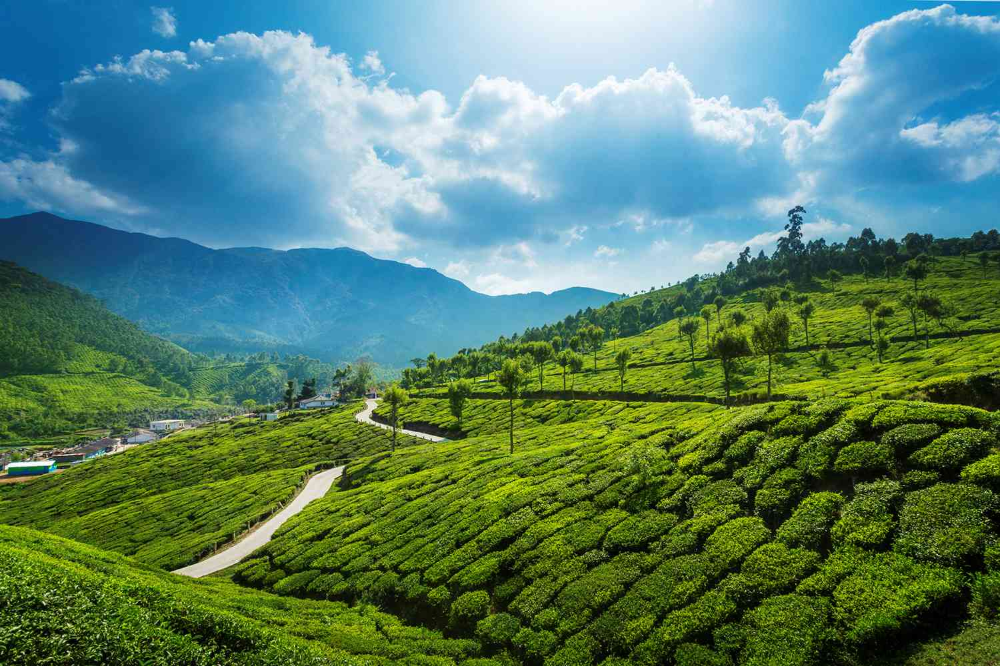

Explore ancient temples, serene backwaters, lush hill stations, and vibrant cultures across five beautiful states
Discover the rich cultural tapestry and natural wonders of India's southern region
South India is known for its diverse cultural heritage, beautiful temples, and scenic landscapes. It includes the states of Tamil Nadu, Kerala, Karnataka, Andhra Pradesh, and Telangana.
South India, a region brimming with rich history, vibrant culture, and stunning natural beauty, offers an unforgettable travel experience. From bustling cities to tranquil beaches and verdant hills, this region is a paradise for travelers.
Embark on a journey through the picturesque backwaters of Kerala and enjoy the serene beaches. The tranquil lakes, lush greenery, and pristine beaches offer a perfect escape for nature lovers and relaxation seekers.
Explore the historical richness of South India with visits to magnificent landmarks such as the Brihadeeswarar Temple in Tamil Nadu, the Golconda Fort in Telangana, and the Mysore Palace in Karnataka.

Explore the unique character and attractions of each state

Land of magnificent temples and classical arts
Discover the rich cultural heritage, magnificent temples, and vibrant traditions of Tamil Nadu, home to UNESCO sites like Mahabalipuram.

God's Own Country with serene backwaters
Experience the serene backwaters, lush greenery, beautiful beaches and Ayurvedic traditions of Kerala's tropical paradise.

From tech hubs to ancient ruins
Explore the historical landmarks, vibrant cities, coffee plantations and scenic landscapes of diverse Karnataka.

Rich heritage and scenic beauty
Discover the rich cultural heritage, sacred temples, and scenic beauty of Andhra Pradesh along the Bay of Bengal.

Historic landmarks and vibrant cities
Experience the historical richness, vibrant festivals, and modern cities including Hyderabad, the City of Pearls.
Iconic destinations that define the spirit of South India

Tamil Nadu's UNESCO heritage site
Visit the UNESCO World Heritage Site of Mahabalipuram, known for its rock-cut temples and stunning sculptures from the Pallava dynasty.

Karnataka's ancient ruins
Explore the ancient ruins of Hampi, a UNESCO World Heritage Site with stunning temples and historical significance from the Vijayanagara Empire.

Serene network of lagoons
Glide through Kerala's picturesque backwaters on traditional houseboats, surrounded by lush greenery and peaceful villages.

Queen of Hill Stations
Discover the scenic beauty of Ooty with its tea plantations, botanical gardens and colonial charm in the Nilgiri hills.

Cliffside Beach Paradise
Experience the unique beauty of Varkala, Kerala's serene beach town with red cliffs, spiritual vibes, natural springs, and breathtaking sunset views over the Arabian Sea.

Tranquil Beach Escape
Relax at the crescent-shaped beaches of Kovalam, known for golden sands, lighthouses, and rejuvenating Ayurvedic treatments.
Curated experiences for every type of traveler

6 Days | ₹26,317 per person
Explore the magnificent temples, cultural sites, hill stations and vibrant traditions of Tamil Nadu with expert guides.

7 Days | ₹34,717 per person
Discover the historical landmarks, vibrant cities, coffee plantations and wildlife of Karnataka in this action-packed itinerary.

5 Days | ₹65,000 per person
Discover Telangana’s historical landmarks, vibrant festivals, and modern lifestyle with this dynamic and immersive travel package.

6 Days | ₹70,000 per person
Experience the rich cultural heritage, sacred temples, and scenic beauty of Andhra Pradesh through this specially curated travel package.

7 Days | ₹83,000 per person
Discover the serene backwaters, lush tea gardens, scenic hill stations, and golden beaches of Kerala with this immersive travel experience.
A culinary journey through diverse flavors

Crispy fermented crepe
Try the crispy and savory dosa, a popular South Indian dish made from fermented rice and lentil batter, served with chutney and sambar.

Steamed rice cakes
Savor the soft and fluffy idlis, steamed rice cakes that are perfect for breakfast or snacks, typically served with coconut chutney and sambar.

Fragrant rice dish
Indulge in the aromatic Hyderabadi biryani, a rice dish cooked with fragrant spices and meat, known for its unique dum cooking technique.

Traditional dessert
Treat yourself to the sweet and creamy payasam, a traditional South Indian dessert made with milk, rice/jaggery, and flavored with cardamom.
Celebrations that showcase South India's cultural richness

Tamil Nadu's harvest festival
A four-day harvest festival celebrated with traditional dishes, music, and dance, honoring the Sun God and farm animals.

Kerala's vibrant festival
A vibrant festival marking the homecoming of King Mahabali, celebrated with feasts, floral decorations, snake boat races and Kathakali performances.

New Year in Karnataka
The New Year festival celebrated with special dishes like Bevu Bella and cultural events, marking the start of the new year according to the lunisolar calendar.
Telangana's folk festival
A Hindu festival where women carry pots decorated with flowers and offerings to Goddess Mahakali, accompanied by rhythmic drum beats and folk dances.
Thrilling experiences for adventure enthusiasts

Western Ghats trails
Explore the breathtaking trails of the Western Ghats, including Kodachadri, Kumara Parvatha and Tadiandamol, known for rich biodiversity.

Andaman & Lakshadweep
Dive into the crystal-clear waters to discover vibrant coral reefs and marine life at India's best diving spots in Andaman and Lakshadweep.

Bandipur & Periyar
Experience thrilling wildlife safaris in Bandipur and Periyar National Parks, home to tigers, elephants and diverse flora and fauna.

Hampi's boulder landscape
Challenge yourself with rock climbing adventures in the boulder-strewn landscapes of Hampi, a world-class destination for climbers.
Traditional craftsmanship and artistic heritage

Tamil Nadu's silk treasures
Admire the exquisite silk sarees from Kanchipuram known for their rich colors, intricate zari work and durability, woven with pure gold and silver threads.

Karnataka's classical art
Explore the traditional Mysore paintings, known for their vibrant colors, intricate gold leaf work and depiction of Hindu gods and goddesses.

Kerala's artisan tradition
Discover beautifully crafted wooden items from Kerala including rosewood carvings, Kathakali masks and traditional furniture showcasing local artistry.

Telangana's metal craft
Marvel at the beautiful Bidriware from Hyderabad, a metal handicraft featuring silver inlay on blackened alloy with intricate Persian designs.
A visual journey through South India's beauty


What our visitors say about their South India experience